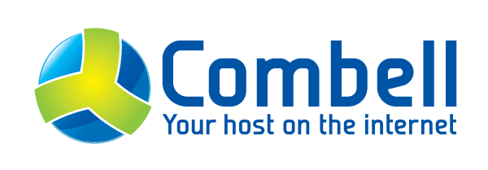

Wifi: --
Pass: --
Programma
20:00 - 20:15 - Intro
20:15 - 20:30 - Intro Webdoos
20:30 - 21:00 - C++ <3 PHP (Thomas)
21:00 - 21:15 - Pauze
21:15 - 22:00 - Your code are my tests! (Mike)
22:00 - ... - Socializen
Eerste sponsor
- Jachim: jachim@php-wvl.be
- Tom: tom@php-wvl.be
- Algemeen: info@php-wvl.be
- http://php-wvl.be
 phpwvl
phpwvl- PHP-WVL (group)
- PHP-WVL (group)
 PHP-WVL (organization)
PHP-WVL (organization)- phpwvl
Noaste kjee
To Be Determined...
PHP-WVL zoekt...

PHP-WVL zoekt...
- Locaties
- Sprekers
- Sponsors
Credits
- Previously on 24: http://24.wikia.com/wiki/Previously_on_24?file=Previouslyon24.jpg
- Social media icons: http://dribbble.com/shots/1074961-Flat-Icons-EPS
- Uncle Sam: http://www.wired.com/2012/03/feds-seize-foreign-sites/